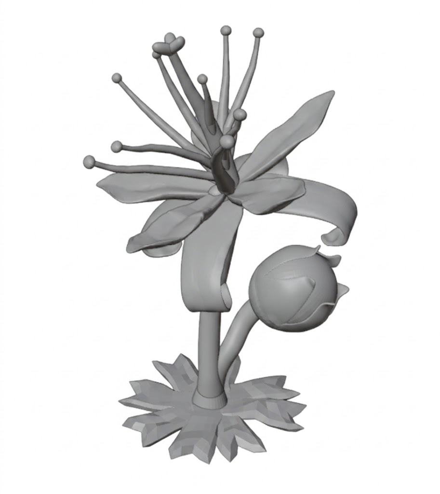
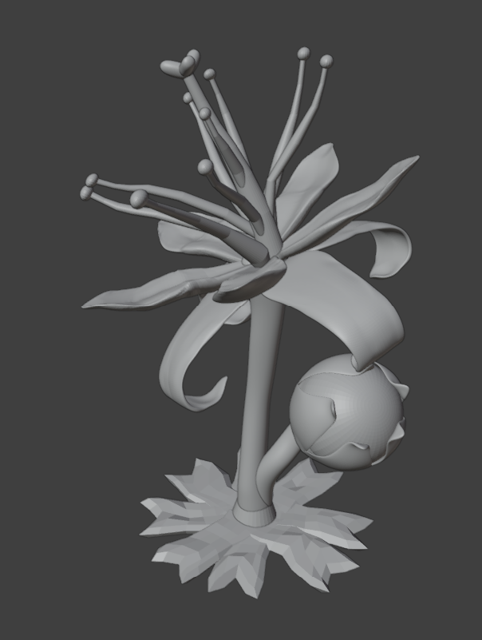
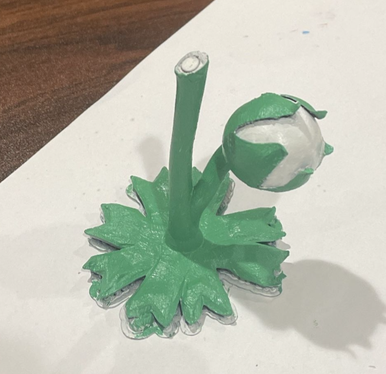
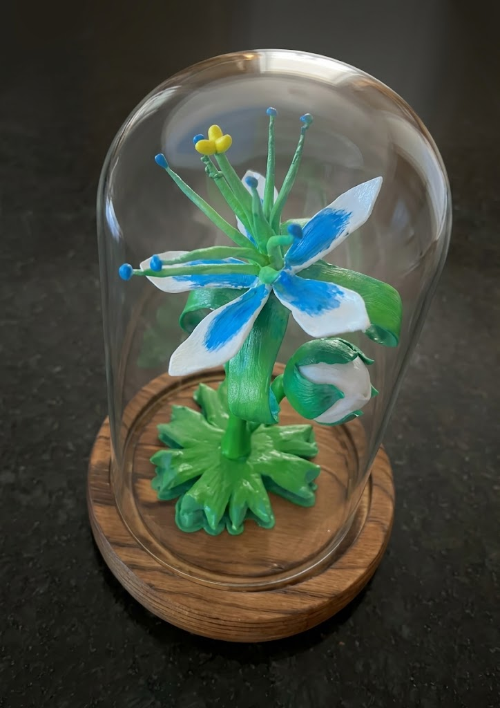

Zelda Silent Princess Replica
Overview
To create a special gift for a big fan of The Legend of Zelda, I decided to bring their favorite in-game flower, the Silent Princess, to life. I modeled a highly detailed, organic replica of the flower from scratch, successfully navigated complex 3D printing challenges, and hand-finished the piece using custom-mixed acrylic and glow-in-the-dark paints to capture its magical aesthetic.
Key Design & Manufacturing Highlights
- Organic Modeling Workflow: Started by blocking out the flower using basic primitives (similar to traditional CAD workflows), then utilized Blender’s sculpting tools to add lifelike details, curvature, and organic imperfections to the leaves and petals.
- Overcoming Printing Instability: The tall, slender cylinder shape of the stem created an extremely high moment arm. This caused the print to struggle against inertia and nozzle nudging on the higher layers due to limited bed adhesion. A large brim proved insufficient to preserve maximum print quality.
- Magnetic Joint Engineering: To solve the moment arm issue, I imported the mesh into CAD software, split the flower in half across the stem, and designed cavities to insert and superglue magnets to each end.
- Iterative Efficiency: Splitting the model not only solved the stability issue but allowed me to rapidly iterate and reprint just the complex top half of the flower without wasting time and material on the base.
- Post-Processing & Finishing: Hand-painted the final printed pieces to match the exact color palette from the game, utilizing glow-in-the-dark blue paint for specific accents to replicate the flower's signature bioluminescence.
Technical Specifications
| Modeling Software | Blender (Sculpting & Organic Modeling), CAD (Splitting) |
|---|---|
| Manufacturing Method | Fused Deposition Modeling (FDM) |
| Assembly Mechanism | Internal superglued magnetic joint |
| Post-Processing | Sanding and hand-painting |
| Finishes Used | Standard Acrylics & Glow-in-the-Dark Blue Paint |
Gallery


